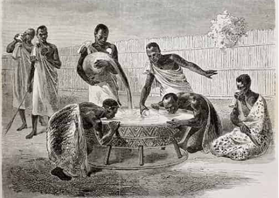
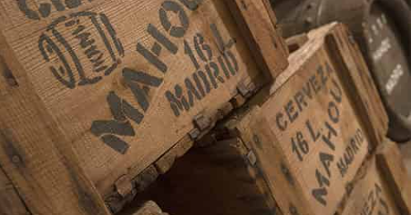

Sus orígenes nos trasladan a hace 9.000 años en el Nilo Azul (Sudán) donde se han identificado restos de un tipo de cereal denominado sorgo con evidencias de fermentación. Siglos después, en el 4.000 a. C., se menciona el sikaru, bebida elaborada con granos fermentados, en unas tablillas sumerias. Los chinos, hace más de 4.000 años, también bebían un fermento de trigo, cebada, espelta, mijo y arroz que denominaron Kiu. En el 3.000 a. C. en Mesopotamia, la cerveza jugó un importante papel ritual, comercial y medicinal. La cerveza más popular en este periodo helenístico era el Zythum, termino que hace referencia a la formación de espuma cuando se servía. Esto permitió su rápida expansión por los países colindantes y la cuenca mediterránea.
Su Origen y Expansión
La Cerveza en España
Los hallazgos de cerveza más antiguos de Europa se han encontrado en la Cueva Can Sadurní, en Begues (Barcelona): un recipiente cerámico con restos de esta bebida y unos molinos con evidencias de cereal malteado que datan del 3.000 a.C. Hasta este descubrimiento, los considerados más remotos en el tiempo eran los hallados en el Valle de Ambrona (Soria), con 4.400 años de antigüedad, seguidos de los localizados en los yacimientos de Genó (Lleida), correspondientes a la Edad de Bronce (1.200 a.C). Los primeros gremios cerveceros aparecen en el siglo XII, época en la que esta bebida se utiliza como complemento alimenticio para peregrinos y enfermos alojados en albergues y hospitales. Éstos eran controlados por órdenes monásticas que dieron lugar a la llamada cerveza de los monjes. En 1100 santa Hildegarda von Bingen habla por primera vez del lúpulo como “como una planta excelente para la salud humana y que preserva todo tipo de bebidas”. Este descubrimiento revoluciona el mundo de la cervecería.

Su Expansión en Nuestro País
Pero fue el emperador Carlos V quien introdujo con más fuerza la cerveza en España, trayendo con él una corte de maestros cerveceros expertos en la elaboración artesanal de este producto natural. A finales del siglo XVI, se instalaron las primeras fábricas en Madrid, aunque las cerveceras florecieron a finales del XIX. La cerveza, en el pasado una bebida sagrada reservada a las clases dominantes para la celebración de ciertos ritos, hoy en día se ha convertido en un producto de consumo para todos, ligado a las relaciones sociales.